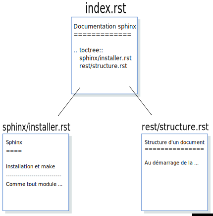

Structure d’un document
La création de la documentation, avec la commande sphinx-quickstart, le fichier
index.rst a été créé et ajouté dans le dossier source. Ce fichier est la page
d’accueil de notre export html, il contient donc les liens vers les autres pages de notre
documentation.
Par exemple, pour cette documentation, le fichier d’index contient les liens vers 2
fichiers qui sont installer.rst placé dans le dossier sphinx et cette page
structure.rst placé dans le dossier rest.
Structure un document
Note
Les 2 fichiers installer.rst et structure.rst peuvent eux-même pointer vers
d’autres fichiers.
Quel que soit le fichier, celui-ci est rédigé avec la syntaxe reST pour restructued Text.